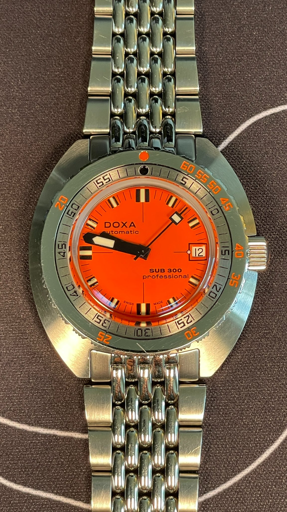
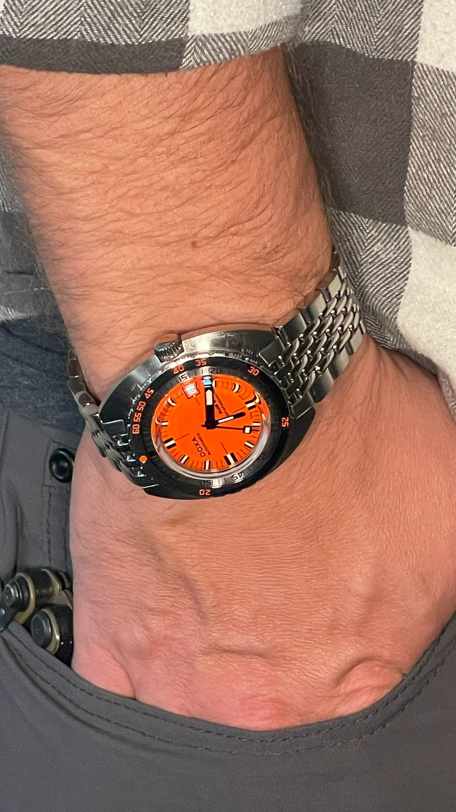
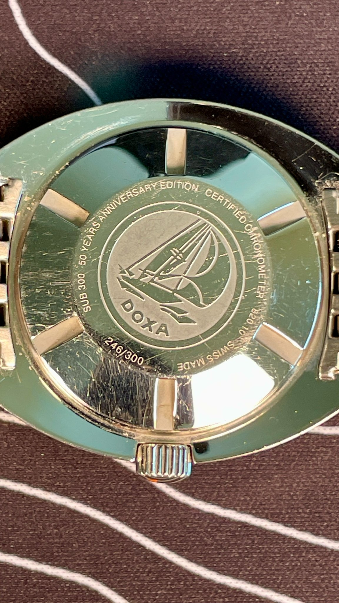
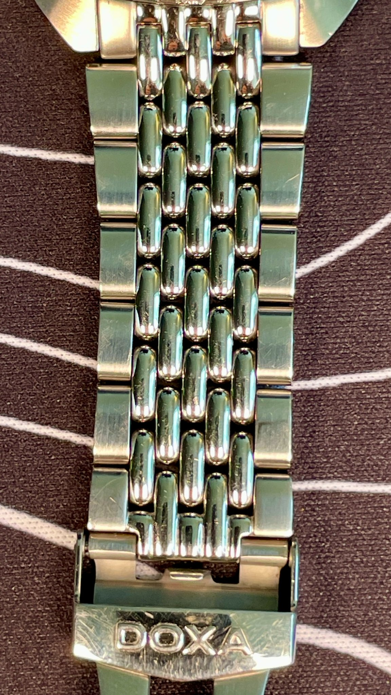
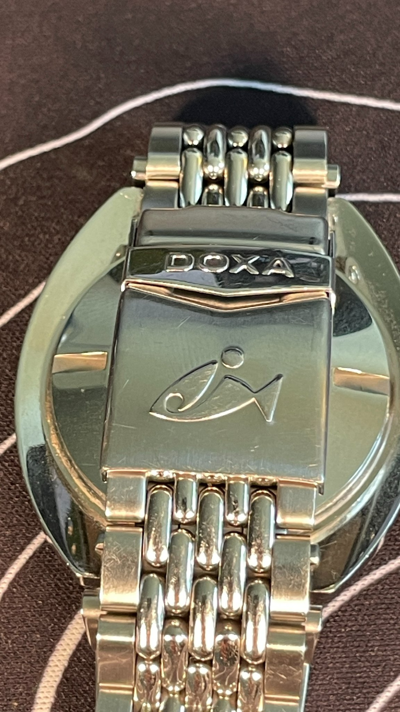
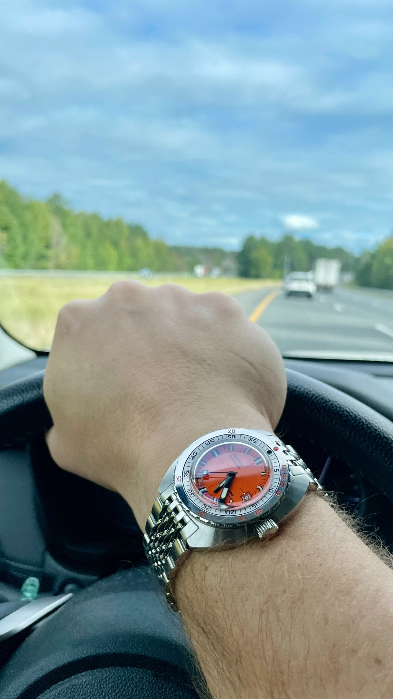

The Orange One
I first learned about the DOXA SUB 300 roughly 25 years ago, reading Inca Gold by Clive Cussler. It was my first Dirk Pitt novel, and the orange DOXA on Pitt’s wrist was one of those details that stuck with me.
My dad was a big Clive Cussler fan. He would read the books and pass them along to me when I was old enough, so I worked my way through quite a few of them over the years. I think I made it through around 21 books in total. If you know the Dirk Pitt series, you know the watch was a recurring part of the character. Pitt worked for the fictional NUMA, spent plenty of time around the ocean, and wore an orange DOXA SUB.
Somewhere along the way, I decided I wanted one.
That idea stuck around long after I finished the books. I mentioned it to my wife and buddies more than once over the years, usually when watches or the books came up. It was never really about needing another watch. I had connected this particular one to a part of my childhood, and I liked the idea of eventually owning it.
So when I had the opportunity to reach out to DOXA about reviewing a SUB 300, I did. They were kind enough to work with me and send one out on loan. I specifically asked for the orange dial, for obvious reasons.
What arrived was the SUB 300 Professional 50th anniversary edition, numbered 246 of 300.
That was a pretty cool email to receive, and an even better watch to open.

A 42.5mm Watch That Wears Smaller
On paper, the SUB 300 measures 42.5mm across. Based on that number alone, I expected it to have more presence on my wrist than it does.
It wears smaller than I expected. The dial and bezel design seem to keep the overall look compact, and with the orange dial, there's a lot of stainless steel around it. You notice the case as much as you notice the dial.
I have fairly large forearms, and I wouldn't complain if DOXA offered a larger version. That isn't the same as saying this one is too small, though. It sits comfortably, and I never felt like the proportions were wrong. I just think there could be room for another size in the lineup for people who prefer a larger watch.

The orange dial also changes the way the watch wears visually. It draws your eye immediately, so the watch doesn't disappear under a cuff or fade into the background. If that's not your thing, DOXA offers other dial colors that give the SUB 300 a more restrained look. I suspect the black, white, or silver options would feel even less imposing on the wrist.
I wanted orange, and orange is what I got. I'm not complaining.
This Is a Proper Dive Watch
The SUB 300 is rated to 300 meters, or 984 feet, of water resistance. It has the features you'd expect from a serious dive watch, including a screw down crown and a unidirectional rotating bezel.
The bezel is worth a closer look because it doesn't use a separate insert. The scale is on the stainless steel bezel itself, with markings for dive time and depth. It gives the watch a different appearance from the familiar black bezel designs you see on so many dive watches.
It's also a big part of what makes the SUB 300 recognizable. The shape of the case, the bezel, and that orange dial all work together. You don't have to look at the name on the dial to know you're looking at a DOXA.
The watch has a sapphire crystal with an anti reflective coating and a stainless steel caseback. Inside is an automatic movement, and the model's specifications include COSC chronometer certification. In other words, this isn't a watch that is only trading on its appearance or its place in diving history. There's substance behind the design, too.

Of course, I wasn't taking it on a deep dive during my review. I wore it as a daily watch, which is how most people considering one are likely to spend their time with it. Still, I appreciate that the design comes from a watch built around an actual purpose rather than one that just borrows the look.
The Bracelet Is Part of the Appeal
The stainless steel Beads of Rice bracelet is one of my favorite details.
It has a rounded, almost pebble like appearance that sets it apart from the bracelets you're used to seeing. It isn't quite a Jubilee, and I wouldn't call it a variation of one. It has its own look, and it suits the case better than a conventional three link bracelet would.

The individual links give it some texture without making it look overly busy. It also changes the feel of the watch. A standard bracelet might make the SUB 300 look more like a conventional dive watch, but the Beads of Rice design gives it some character of its own.
There is a wetsuit extension for when you need the extra length, and the clasp offers adjustment through six slots. That gives you some flexibility to get the fit right without needing to remove links every time your wrist changes slightly throughout the day.

It's a small detail, but fit matters. A watch can look great and still become annoying if you can't get it comfortable. I had no major complaints here.
The Crown and the Little Details
The crown is heavily guarded by the case, which gives the side profile a distinctive shape. The DOXA logo is on the crown, along with an orange detail that ties it back to the dial.
Those little touches help make the watch feel considered rather than generic. There's a consistent design language throughout, from the case and bezel to the bracelet and crown.
None of that is especially surprising on a watch with this much history behind it, but it's worth pointing out. The SUB 300 has a very particular look. It isn't trying to be a Rolex Submariner, and it doesn't need to be.
Wearing It Outside the Watch Box
I wore the SUB 300 to a business casual insurance conference, where I was surrounded by plenty of familiar luxury watches. Rolex Datejusts, Submariners, and Tudors were all around.
The DOXA stood out, but not in a way that felt out of place. It was simply different. The orange dial gets noticed, and the overall design isn't something you see on every other wrist.
I could also see it working just as easily on a beach trip. That's one of the things I appreciate about it. It has a legitimate dive watch background, but you don't have to spend your weekends in the water to enjoy wearing it.

The orange dial won't be for everyone. If you want a watch that slips quietly under the radar, this probably isn't the version I'd point you toward. The more subdued dial options may be a better fit. But if you like a watch with some personality, the Professional makes a strong case for itself.
It's Not a Submariner, and That's the Point
The obvious comparison for any dive watch in this price bracket is going to be the Rolex Submariner. The Tudor Black Bay will come up, too. Those are familiar designs, and for a lot of people they're the reference points for what a dive watch should look like.
The DOXA takes a different approach. Its case, bezel, bracelet, and especially the orange dial give it an identity that doesn't depend on looking like those watches. You can put it in the same general category, but it doesn't feel like a substitute for something else.
That's a good thing. There are plenty of watches that try to capture the look of a classic Submariner. The DOXA has its own history and its own design, and the SUB 300 still looks like itself.
Whether that makes it the right watch for you comes down to what you're after. If you want something understated and familiar, there are plenty of options. If you want a dive watch with a bit more character, the SUB 300 deserves a look.
Final Thoughts
The SUB 300 surprised me a little. I expected to enjoy it because of the history and the connection to the Dirk Pitt books, but I also wanted to spend enough time with it to judge the watch on its own merits.
I like the way it wears, the Beads of Rice bracelet, and the fact that it doesn't look like every other dive watch on the market. I'd be interested in seeing a larger version, but the current 42.5mm case is comfortable and well proportioned. The orange dial is bold, as it should be, and the other available colors give people options if they'd rather have something more subtle.
Is it the right dive watch for everyone? No. The design is distinctive, and the orange dial in particular is going to be a deciding factor. But I think that's part of the appeal. DOXA hasn't tried to make this watch look like something it isn't.
I'm also grateful to the folks at DOXA for working with me and lending me this 50th anniversary edition. I've reviewed plenty of products over the years, but this one came with a personal connection that goes back to when I was a kid reading books my dad had finished.
I didn't know back then whether I'd ever own one. I just knew I liked the watch and wanted one someday. Getting the chance to wear it now, all these years later, was a genuinely enjoyable experience.
And yes, the orange dial was always going to be the one for me. It's the watch I remember from those books, and getting to spend time with it was something I won't take for granted.
Thanks to DOXA for making that happen.
The DOXA SUB 300 Professional is a real dive watch with an identity all its own. The 42.5mm case wears smaller than the number suggests, the Beads of Rice bracelet gives it character and an easy fit, and the steel bezel and orange dial make it instantly recognizable. It isn't trying to be a Submariner, and that's the appeal. If you want something understated, the other dial colors are there. If you want a dive watch with personality, this is the one.